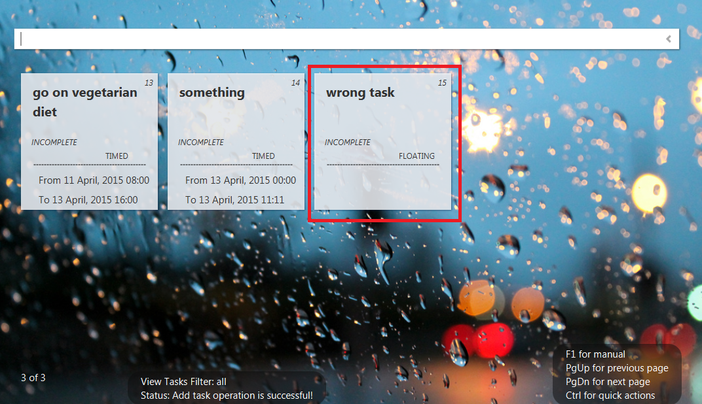
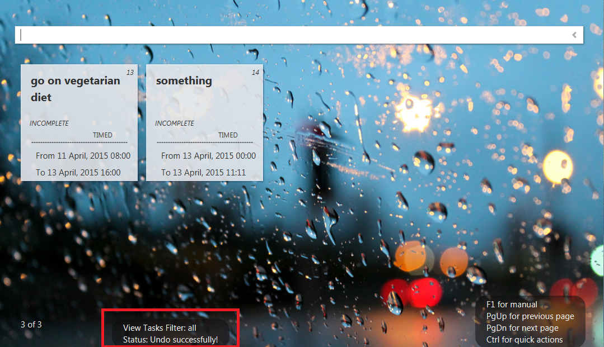

Keyword: nil
Commands available:
Command Format |
Example |
undo |
- |
Note:
Undo command can be requested anytime.
There is no limit to number of actions stored.
Message will be displayed if no more actions to undo.
In this scenario, the user wants to undo a task that he/she added wrongly.


Created with the Personal Edition of HelpNDoc: Produce electronic books easily